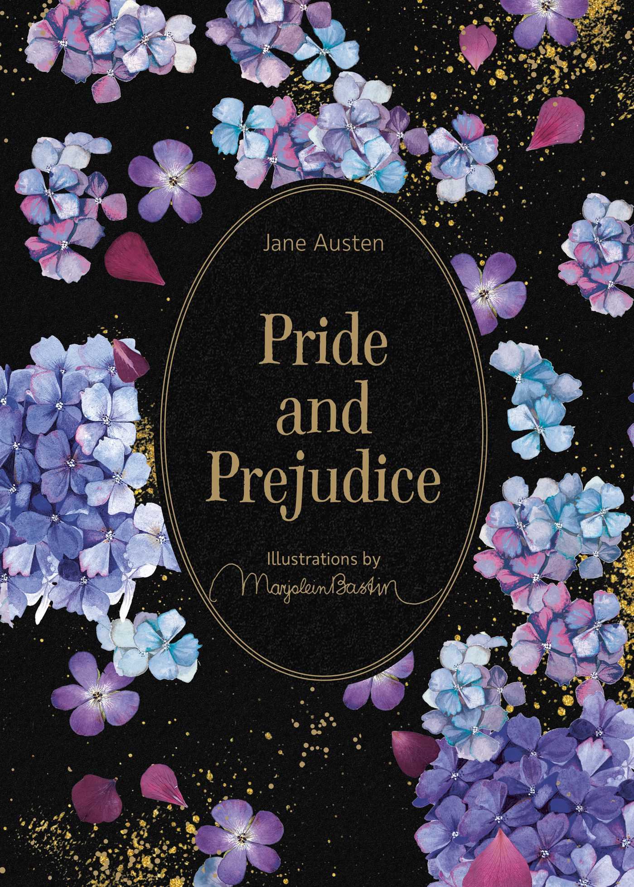

Novels Library
read it by your way and discover your own world
Pride and Prejudice

by“Stephen Fry”
"Pride and Prejudice" tells the story of love and social struggles between Elizabeth Bennet and Mr. Darcy in 19th-century English society.
it's price 100$ 70
George Orwel

In George Orwell's 1984 the story is about a **totalitarian society** under constant surveillance by Big Brother, where truth and history are manipulated for complete control over individuals.
by“George Orwel”
it's price 250150$ 100
The Great Gatsby

by“F. Scott Fitzgerald”
The Great Gatsby is a tragic tale of a mysterious millionaire's obsessive pursuit of his lost love, set against the backdrop of the opulent and morally decaying Jazz Age.
it's price 250$ 170
Made by Eng : Zeyad mamdouh